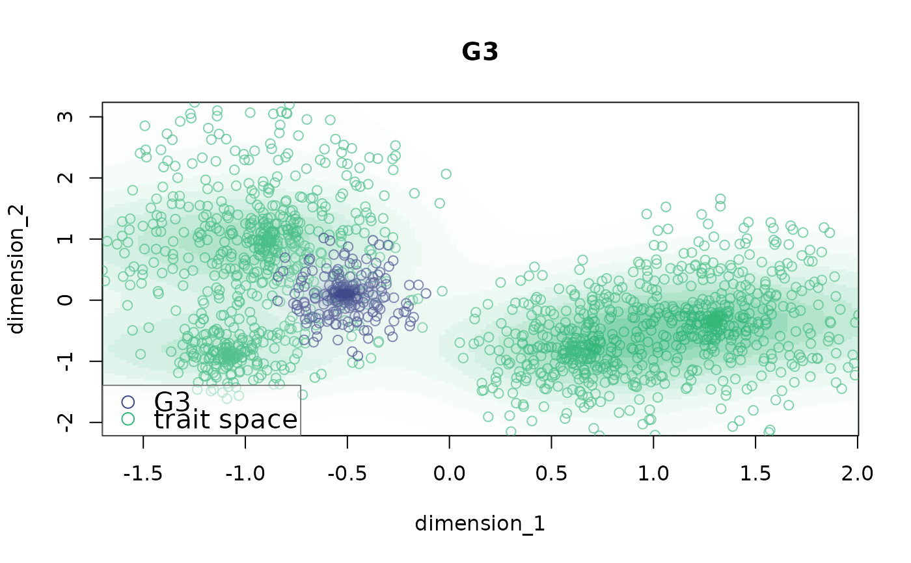

plot_space plots bidimensional trait spaces
Arguments
- X
Data frame containing columns for the dimensions of the phenotypic space (numeric) of the total trait space. This is required so the extent of the plotting area represents the overall trait space in which the sub-space is found.
- dimensions
Character vector of length 2 with the names of the columns containing the dimensions of the phenotypic space.
- indices
Numeric vector with the indices of the rows in 'X' to be used as sub-space for plotting.
- basecex
Numeric vector of length 1 controlling the relative size of the axis labels and tick labels, legend and title. Legend and title are multiply by 1.5 (
basecex * 1.5) to increase size compare to axis text.- title
Character vector of length 1 to be used as the plot title. Default is
NULL.- colors
Character vector with the colors to use for density plotting. 2 values must be supplied if 'background.indices' is supplied. Default is
c("#3E4A89FF", "#35B779FF").- point.colors
Character vector with the colors to use for point plotting. 2 values must be supplied if 'background.indices' is supplied. Default is the same as "colors".
- point.alpha
Numeric vector of length 1 >= 0 and <= 1 with the alpha value for color transparency. Default is 0.7. If 0 points are not plotted.
- point.cex
Numeric vector of length 1 controlling the relative size of the points. Default is 1. If 0 points are not plotted.
- background.indices
Numeric vector with the indices of the rows in 'X' to be used as background traits space for plotting. Points from 'indices' will be plotted on top of these points.
- pch
Either an integer specifying a symbol or a single character to be used as the default in plotting points. See
pointsfor possible values and their interpretation.- labels
Character vector with the labels to be used in the legend. Not used if
legend.pos = NULLor if 'background.indices' is not supplied. Default isc("sub-space", "total space").- legend.pos
Controls the position of the legend. Can take the following values: "bottomright", "bottom", "bottomleft", "left", "topleft", "top", "topright" (default), "right" and "center". If
NULLthe legend is not plotted.- density.alpha
Numeric vector of length 1 >= 0 and <= 1 with the alpha value for color transparency to be used in the highest density regions. Lower density regions will gradually increase in transparency starting from the supplied value. Default is 0.6. If 0 densities are not plotted.
Details
The function plots a sub-group of data (i.e. sub-space) within the overall trait space. The total trait space can also be plotted in the background. By default both points and kernel densities are shown. Graphs are returned in the active graphic device.
References
Araya-Salas, M, & K. Odom. 2022, PhenotypeSpace: an R package to quantify and compare phenotypic trait spaces R package version 0.1.0.
Author
Marcelo Araya-Salas marcelo.araya@ucr.ac.cr)
Examples
{
data("example_space")
# no background
plot_space(X = example_space, dimensions = c("dimension_1", "dimension_2"),
indices = which(example_space$group == "G2"))
# add background
plot_space(X = example_space, dimensions = c("dimension_1", "dimension_2"),
indices = which(example_space$group == "G2"),
background.indices = which(example_space$group != "G2"))
# change legend labels
plot_space(X = example_space, dimensions = c("dimension_1", "dimension_2"),
indices = which(example_space$group == "G2"),
background.indices = which(example_space$group != "G2"),
labels = c("G3", "trait space"))
# change legend position
plot_space(X = example_space, dimensions = c("dimension_1", "dimension_2"),
indices = which(example_space$group == "G2"),
background.indices = which(example_space$group != "G2"),
labels = c("G3", "trait space"), legend.pos = "left")
# with title
plot_space(X = example_space, dimensions = c("dimension_1", "dimension_2"),
indices = which(example_space$group == "G2"),
background.indices = which(example_space$group != "G2"),
labels = c("G3", "trait space"), legend.pos = "bottomleft", title = "G3")
}

